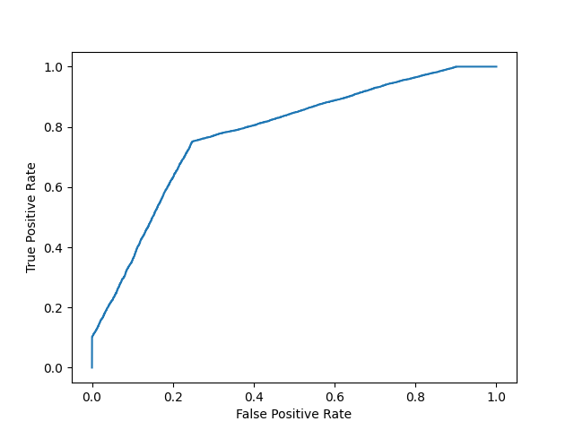

AUC - ROC Curve
In classification, there are many different evaluation metrics. The most popular is accuracy, which measures how often the model is correct. This is a great metric because it is easy to understand and getting the most correct guesses is often desired. There are some cases where you might consider using another evaluation metric.
Another common metric is AUC, area under the receiver operating characteristic (ROC) curve. The Reciever operating characteristic curve plots the true positive (TP) rate versus the false positive (FP) rate at different classification thresholds. The thresholds are different probability cutoffs that separate the two classes in binary classification. It uses probability to tell us how well a model separates the classes.
Imbalanced Data
Suppose we have an imbalanced data set where the majority of our data is of one value. We can obtain high accuracy for the model by predicting the majority class.
Example
import numpy as np
from sklearn.metrics import accuracy_score, confusion_matrix, roc_auc_score, roc_curve
n = 10000
ratio = .95
n_0 = int((1-ratio) * n)
n_1 = int(ratio * n)
y = np.array([0] * n_0 + [1] * n_1)
# below are the probabilities obtained from a hypothetical model that always predicts the majority class
# probability of predicting class 1 is going to be 100%
y_proba = np.array([1]*n)
y_pred = y_proba > .5
print(f'accuracy score: {accuracy_score(y, y_pred)}')
cf_mat = confusion_matrix(y, y_pred)
print('Confusion matrix')
print(cf_mat)
print(f'class 0 accuracy: {cf_mat[0][0]/n_0}')
print(f'class 1 accuracy: {cf_mat[1][1]/n_1}')
Although we obtain a very high accuracy, the model provided no information about the data so it's not useful. We accurately predict class 1 100% of the time while inaccurately predict class 0 0% of the time. At the expense of accuracy, it might be better to have a model that can somewhat separate the two classes.
Example
# below are the probabilities obtained from a hypothetical model that doesn't always predict the mode
y_proba_2 = np.array(
np.random.uniform(0, .7, n_0).tolist() +
np.random.uniform(.3, 1, n_1).tolist()
)
y_pred_2 = y_proba_2 > .5
print(f'accuracy score: {accuracy_score(y, y_pred_2)}')
cf_mat = confusion_matrix(y, y_pred_2)
print('Confusion matrix')
print(cf_mat)
print(f'class 0 accuracy: {cf_mat[0][0]/n_0}')
print(f'class 1 accuracy: {cf_mat[1][1]/n_1}')
For the second set of predictions, we do not have as high of an accuracy score as the first but the accuracy for each class is more balanced. Using accuracy as an evaluation metric we would rate the first model higher than the second even though it doesn't tell us anything about the data.
In cases like this, using another evaluation metric like AUC would be preferred.
import matplotlib.pyplot as plt
def plot_roc_curve(true_y, y_prob):
"""
plots the roc curve based of the probabilities
"""
fpr, tpr, thresholds = roc_curve(true_y, y_prob)
plt.plot(fpr, tpr)
plt.xlabel('False Positive Rate')
plt.ylabel('True Positive Rate')
Example
Model 1:
plot_roc_curve(y, y_proba)
print(f'model 1 AUC score: {roc_auc_score(y, y_proba)}')
model 1 AUC score: 0.5
Example
Model 2:
plot_roc_curve(y, y_proba_2)
print(f'model 2 AUC score: {roc_auc_score(y, y_proba_2)}')
model 2 AUC score: 0.8270551578947367
An AUC score of around .5 would mean that the model is unable to make a distinction between the two classes and the curve would look like a line with a slope of 1.
An AUC score closer to 1 means that the model has the ability to separate the two classes and the curve would come closer to the top left corner of the graph.
Probabilities
Because AUC is a metric that utilizes probabilities of the class predictions, we can be more confident in a model that has a higher AUC score than one with a lower score even if they have similar accuracies.
In the data below, we have two sets of probabilites from hypothetical models. The first has probabilities that are not as "confident" when predicting the two classes (the probabilities are close to .5). The second has probabilities that are more "confident" when predicting the two classes (the probabilities are close to the extremes of 0 or 1).
Example
import numpy as np
n = 10000
y = np.array([0] * n + [1] * n)
#
y_prob_1 = np.array(
np.random.uniform(.25, .5, n//2).tolist() +
np.random.uniform(.3, .7, n).tolist() +
np.random.uniform(.5, .75, n//2).tolist()
)
y_prob_2 = np.array(
np.random.uniform(0, .4, n//2).tolist() +
np.random.uniform(.3, .7, n).tolist() +
np.random.uniform(.6, 1, n//2).tolist()
)
print(f'model 1 accuracy score: {accuracy_score(y, y_prob_1>.5)}')
print(f'model 2 accuracy score: {accuracy_score(y, y_prob_2>.5)}')
print(f'model 1 AUC score: {roc_auc_score(y, y_prob_1)}')
print(f'model 2 AUC score: {roc_auc_score(y, y_prob_2)}')
Example Plot model 1:
plot_roc_curve(y, y_prob_1)
Result 
Example Plot model 2:
fpr, tpr, thresholds = roc_curve(y, y_prob_2)
plt.plot(fpr, tpr)
Even though the accuracies for the two models are similar, the model with the higher AUC score will be more reliable because it takes into account the predicted probability. It is more likely to give you higher accuracy when predicting future data.